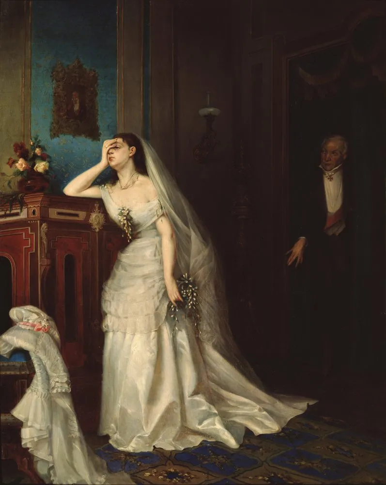
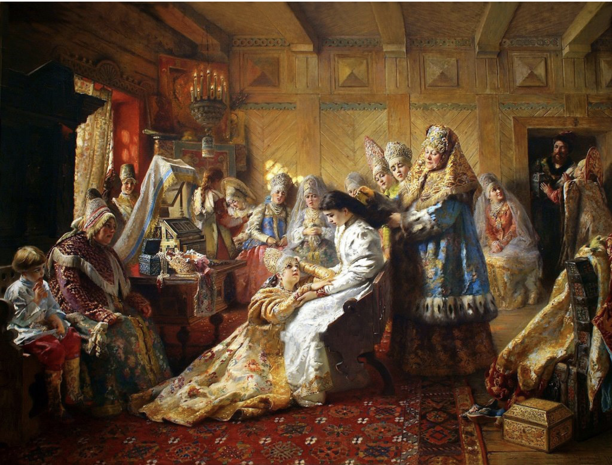

Marriage and Divorce Laws in Imperial Russia

In Imperial Russia, marriage was a religious and legal institution governed by the Orthodox Church rather than civil courts. Because of this, divorce was not a private matter but a formal process controlled by ecclesiastical authorities and shaped by religious doctrine and social expectations. At the same time, the conditions under which divorce was allowed were extremely limited, making it difficult to obtain even when a marriage had clearly broken down.
These limitations are reflected directly in Anna Karenina. In Chapter 5 of Part 4, the lawyer explains that divorce could occur only in specific cases: “physical defects of the married partners; separation for five years without communication ... and adultery” (Tolstoy 371). This shows that divorce depended on a narrow set of officially recognized grounds and required assigning guilt rather than allowing for mutual agreement. In practice, adultery became the most important of these grounds, since it could be demonstrated and used in legal proceedings.
Because the law was so restrictive, people often had to adapt their situations to fit it. In the same chapter, the lawyer tells Karenin that “he who wants the results must accept the means” (Tolstoy 372), emphasizing that achieving a divorce required working within the system’s logic, even if that meant staging or exaggerating wrongdoing. This helps explain why arrangements such as “adultery by mutual consent” emerged, where one spouse agreed to take the blame so that the other could remarry.
The divorce procedure was complex and involved multiple levels of the Church. As described in Gregory Freeze’s article “Marriage and Divorce in Late Imperial Russia,” the process began with a formal petition, followed by an attempt at reconciliation, in which the local priest urged the couple to remain together (Freeze 147-153). If reconciliation failed, the case moved to the diocesan court, where evidence and witness testimony were examined. The court then prepared a summary of the case, which the bishop reviewed and, if approved, sent to the Holy Synod for final review. Only after this multi-stage process could a divorce be granted. As Freeze notes, cases often relied on “half-truths and outright lies,” suggesting that the system relied more on procedural requirements than on establishing moral truth (Freeze 151).
In practice, however, the system did not operate equally for everyone. Among the elite, influence and social position could shape outcomes. Famous figures such as Prince Baryatinsky in Russia were able to arrange divorces by strategically assigning guilt and arranging a mutual consent divorce. The fact that Tsar Alexander II himself maintained a second family further exposed the gap between official doctrine and lived reality.
Tolstoy incorporates these legal and social dynamics directly into Anna Karenina. Karenin briefly agrees to pursue a Baryatinsky-style divorce, accepting the idea of assigning guilt to himself to resolve the situation. Anna, however, refuses, showing that even when a legal solution exists, it does not address her position. Later, Karenin’s sense of humiliation and concern for public opinion led him to withdraw his consent, demonstrating how legal outcomes are shaped not only by formal rules but also by emotion and social pressure. At the same time, Tolstoy’s portrayal of Karenin’s lawyer suggests a critique of the system itself: the lawyer’s distracted behavior, such as his quick reactions to catching moths, and his visible satisfaction at the prospect of profiting from Karenin’s case, present the legal process as mechanical and self-serving, rather than morally grounded. It is also important to remember that judicial reforms were very recent in Russia at that time, which explains the system's multiple flaws.
As Gary Saul Morson writes in Anna Karenina in Our Time, “The author does not regard all reasons against granting a divorce and custody of Seryozha as wrong” (Morson 115). This suggests that Tolstoy does not simply reject the refusal of divorce but presents it as part of a morally and legally complex situation. While the legal system is shown to be rigid and often ineffective, the concerns behind restricting divorce, such as duty, social order, and responsibility, are not entirely dismissed.
In this way, Tolstoy presents marriage and divorce laws in Anna Karenina as a system defined by strict criteria and a complex legal and emotional procedure, marked by inconsistencies and inequalities. While grounded in religious principles, the system often depended on negotiation, influence, and strategic manipulation, revealing a clear gap between the ideal of marriage and its reality in late imperial Russia.

Works Cited
- Freeze, Gregory L. "Profane Narratives about a Holy Sacrament." Sacred Stories: Religion and Spirituality in Modern Russia, edited by Mark D. Steinberg and Heather J. Coleman, Indiana University Press, 2007, pp. 146–178.
- Morson, Gary Saul. Anna Karenina in Our Time: Seeing More Wisely. Yale University Press, 2007.
- Tolstoy, Leo. Anna Karenina. Translated by Richard Bartlett, Oxford University Press, 2014.